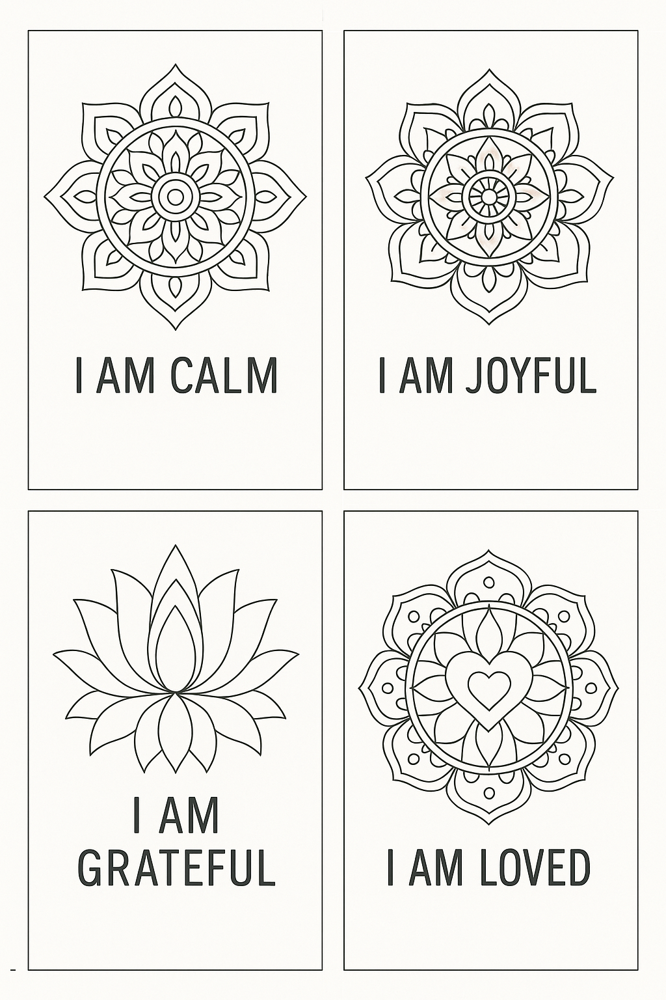
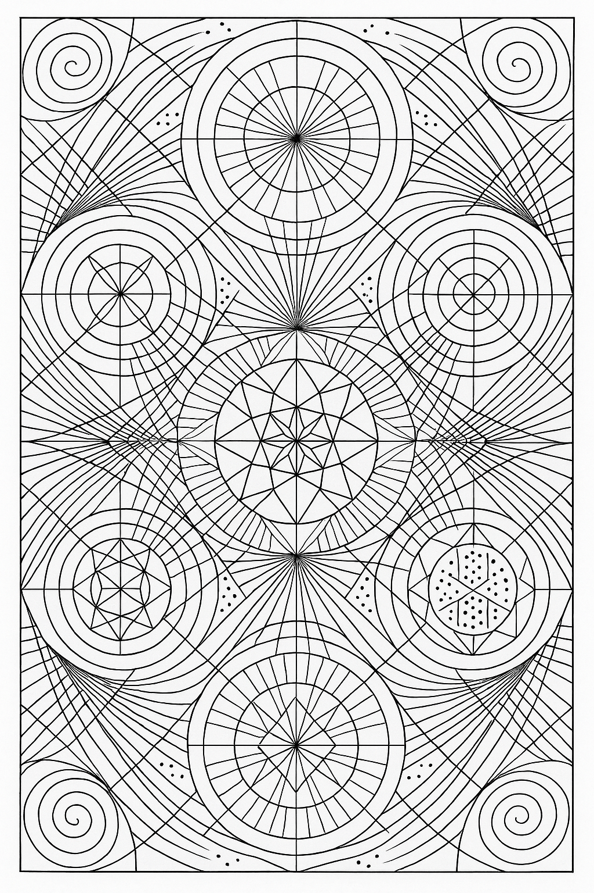
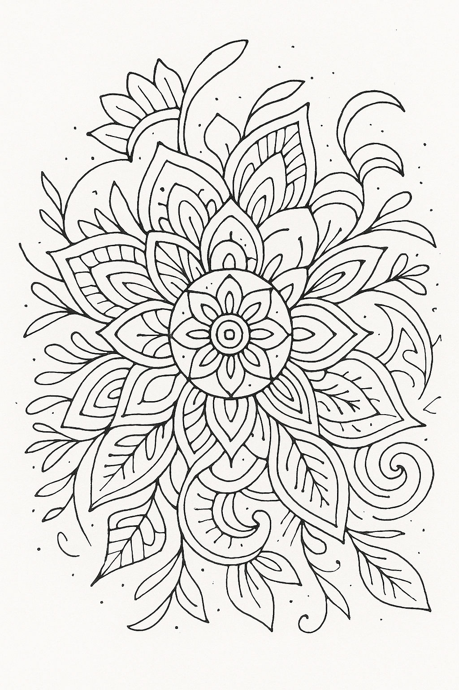
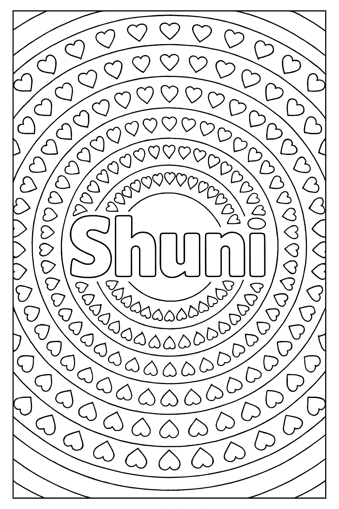
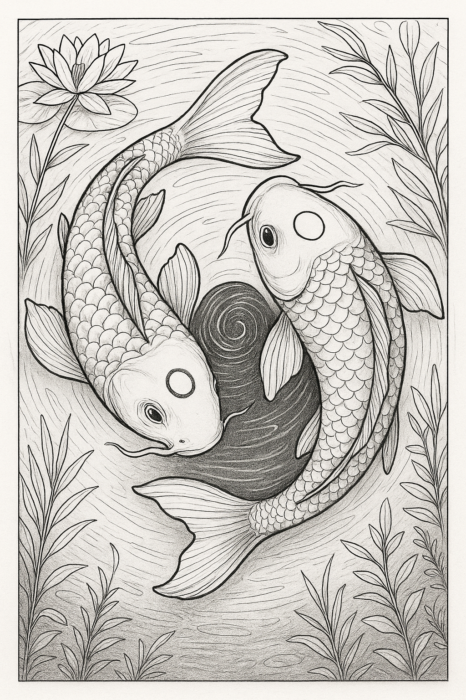
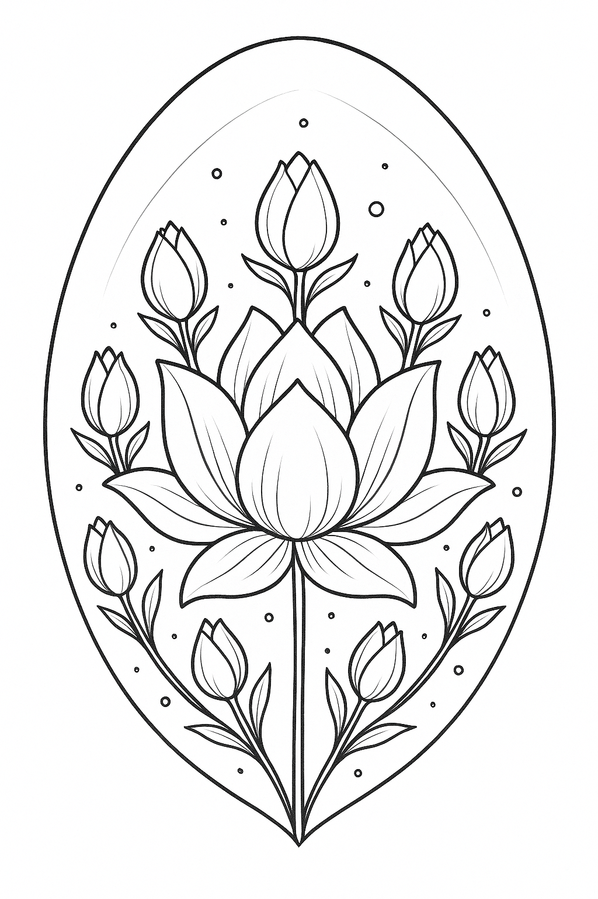
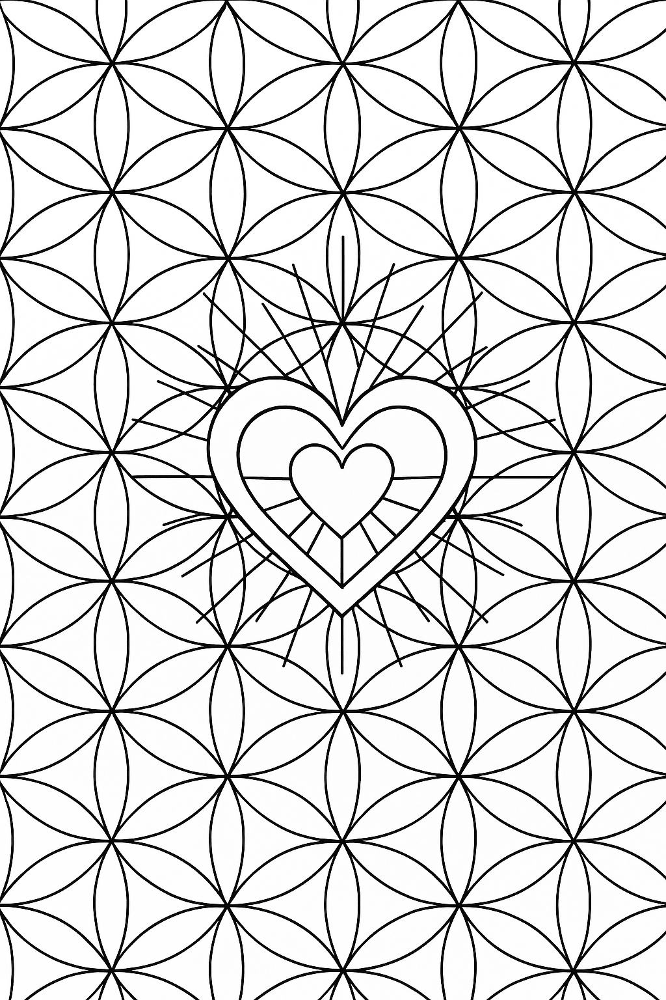
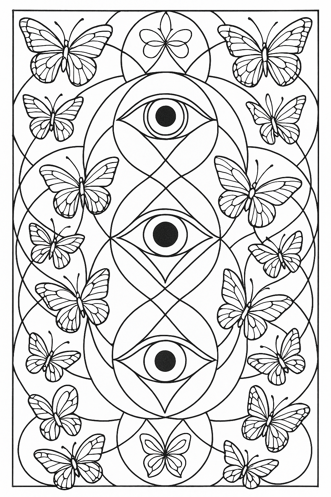
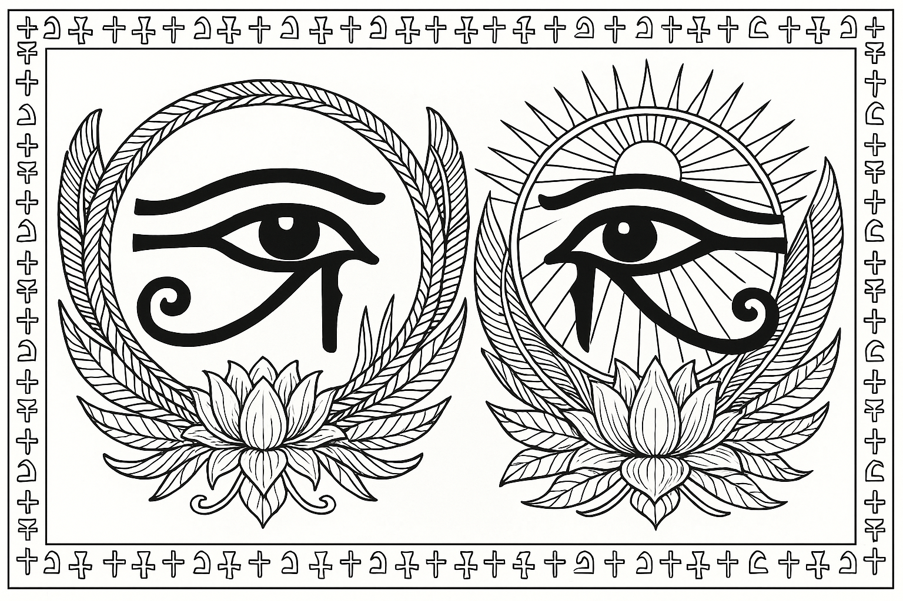

4 Poorten van het Hart
4 Mandala's die kalmte, vreugde, dankbaarheid en liefde uitdrukken. Moge de vormen en kleuren je helpen naar binnen te keren.
Emma Kunz style Geometrie
Een geometrische tekening geïnspireerd door het werk van de Zwitserse visionaire kunstanares en genezeres.
Wabi-Saba Mandala
Een mandala die de Japanse levensfilosofie van Wabi-Sabi weerspiegelt: schoonheid in eenvoud, imperfectie en vergankelijkheid.
Shuni - Kracht in Stilte
Geometrische tekening geïnspireerd op Shuni (Saturnus), de kracht van innerlijke helderheid, discipline en stilte vrij van hardheid.
Yin-Yang Kooikarpers
Twee sierlijke karpers in yin-yangvorm symboliseren balans, zachtheid en de dans tussen licht en schaduw.
Sacred Lotus of Safe Blooming
Een open centrale lotus omring door 8 gesloten knoppen in eivormige rust. Een velige ruimte waar je in zachtheid mag openen.
Flower of Life & Sacred Heart
De levensbloem met een stralend hart in het midden - een herinnering aan liefde als verbindende kracht.
Vesica Pisces - Poort van Licht
Twee cirkels die elkaar raken vormen een poort - het oerbeeld van geboorte, creatie en verbinding tussen werelden.
Oog van Horus & Ra
Een symbool van innerlijk zicht, bescherming en goddelijke helderheid. Dit oog kijkt niet naar buiten, maar naar binnen.